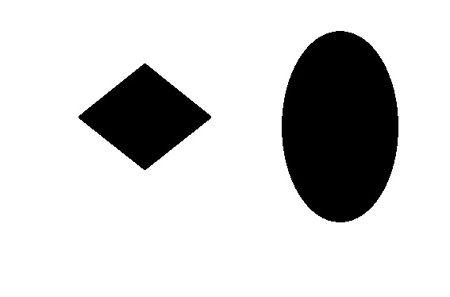
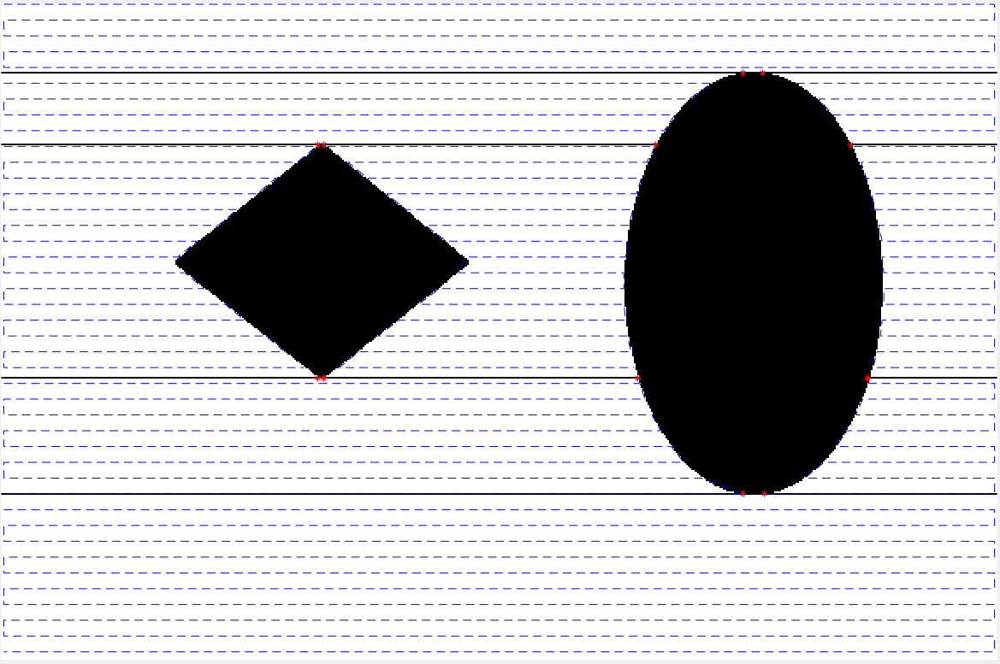

Boustrophedon_decompostion is cell decomposition of known map and create right to left and left to right path for each subcell and connect all the cells in shortest distance fashion. And the decomposition is done by finding the obstacle (critical points) where the free space is divides into more regions or combines and forms less regions.
Applications:
Automated Lawn-mowers and Vacuum Cleaners.
Matlab Simulation Code Repository:
Input: 
Output: 
function [path,A]=boustrophedon(polygon_image)
%% intro
%boustrophedon means moving left to right and right to left
%give any irregular polygon then it decomposes into sub poygons by finding
% the critical points
%input- image of irregular polygon
%output- coverage path
% there should be continuity in the free space (which will make
% connectivity between subcells
%% code
A= imread(polygon_image);
A=im2bw(A);
x=zeros(size(A,1),1);
idy=[];obstacle_points=[];critical_points=[];
for i=1:size(A,1)
[x(i),idy]=no_of_lines(A(i,:));
obstacle_points=[obstacle_points;[i*ones(size(idy,1),1),idy]];
end
[idx,no_of_cells]=find_boundary_ids(x,A)
for i=1:size(idx,1)
critical_points=[critical_points;obstacle_points(find(idx(i)==(obstacle_points(:,1))),:)];
end
dist=9;
path=make_path(A,x,dist,no_of_cells,idx);
A(idx,:)=0;
% A=create_boundaries(A,critical_points);
imshow(A);
hold on;
plot(critical_points(:,2),critical_points(:,1),'r*');
for i=1:no_of_cells
plot(path{i}(:,1),path{i}(:,2),'b--');
end
end